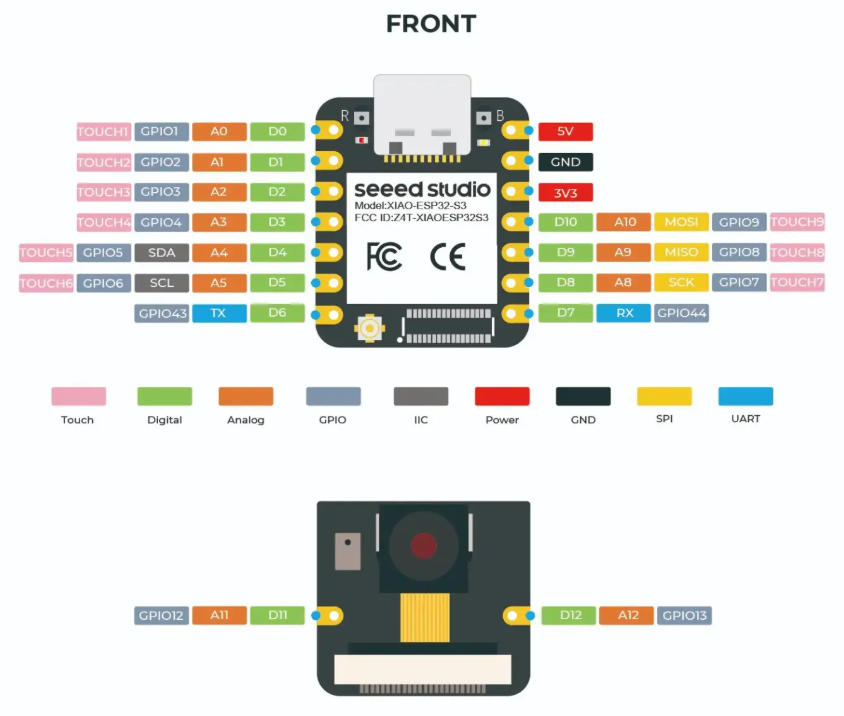

Pin Table — Seeed Studio XIAO ESP32‑S3 Sense
The table below assigns pins for:
- Four DC motor pumps driven by two L9110 dual motor drivers
- One salinity sensor (two excitation pins + one analog read)
- One depth sensor using a UART interface (RX/TX)
All GPIOs on the XIAO ESP32‑S3 are 3.3 V logic. Ensure every module connected to the MCU’s IO uses 3.3 V logic levels. Tie all grounds together.
Assignments

High Level Electrical Overview
Centered around ESP32 XIAO S3 Sense powered by USB-C 5V Battery Pack.
Improvements:
Too many components pull from 5V pin of ESP, External Dedicated Power needed

Pin Assignments
Alternate sheet
Option B — Shared Direction (sequential pump operation)
This variant ties all L9110 “direction” inputs together so every pump reverses together, while you only enable one pump at a time. This reduces GPIO count but has electrical caveats; read the notes below carefully.
Wiring Notes
- L9110 drivers: Each DC motor uses two inputs; one pin can be PWM for speed. Typical drive patterns: Forward = IN1=PWM, IN2=LOW; Reverse = IN1=LOW, IN2=PWM; Brake = IN1=HIGH, IN2=HIGH. Power the motors from a separate supply sized for the pumps; connect grounds to the XIAO GND.
- I2C pins (
D4/SDA,D5/SCL): This plan uses these as motor control. If you later add I2C devices, remap M3 pins to free GPIOs instead (e.g.,D10/A10and a bottom pad) and returnD4/D5to I2C. - Salinity sensor: Drive an alternating excitation on
D11/D12to reduce electrode polarization, then sample onA10. Add a resistor network per your probe design to keep the ADC within 0–3.3 V. - Depth sensor (UART): Connect sensor TX→
RX/D7and sensor RX←TX/D6. Provide the sensor with 3.3 V TTL UART levels. Many depth modules require 5 V power but still use 3.3 V logic—check your module’s datasheet.
Notes for Option B (Shared Direction)
- Electrical behavior: The L9110 does not provide a dedicated enable per channel. If you physically tie all “direction” inputs together (
DIR_ALL) and feed each motor a single per-channel PWM line, reverse speed control becomes limited because L9110 expects the PWM to be applied on the input corresponding to the selected direction. In the simplest wiring, reverse acts as on/off. If you require PWM in reverse, add a small gating stage (e.g., a 74HC4053/74HC4066 or two NPN/NMOS gates per channel) to route the per-motor PWM to the appropriate L9110 input based onDIR_ALL. - One-at-a-time rule: With
DIR_ALL, ensure only one motor’s PWM is non‑zero at any time, otherwise more than one pump will run together. - Alternative drivers: TB6612FNG or DRV8833 provide clearer PHASE/ENABLE control and per‑channel standby/enable, making shared‑direction + per‑motor enable straightforward in hardware.
Power Guidance
- Motors: Use an external supply appropriate for the pumps. Route this to the
VCC/VMof both L9110 boards; do not draw motor power from the XIAO. Place flyback suppression if your pump is inductive (most DC pumps are). - MCU and sensors: Use the XIAO
3V3for logic and low-power sensors; verify current budget. Always share ground across all modules.